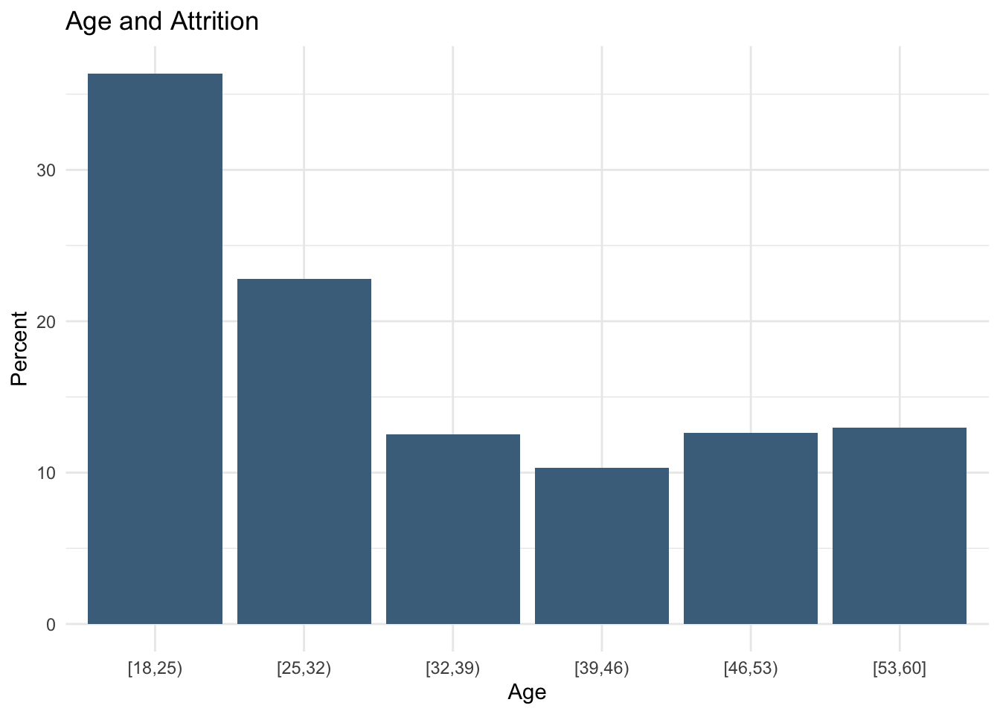
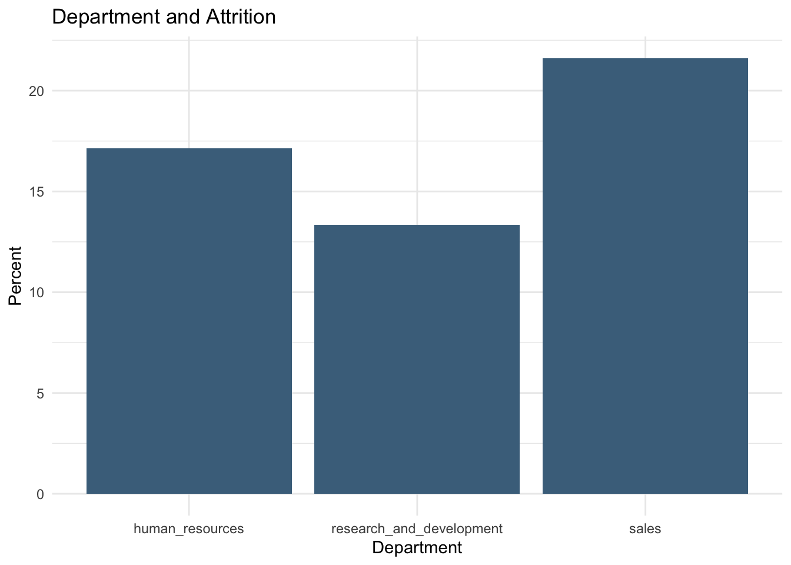
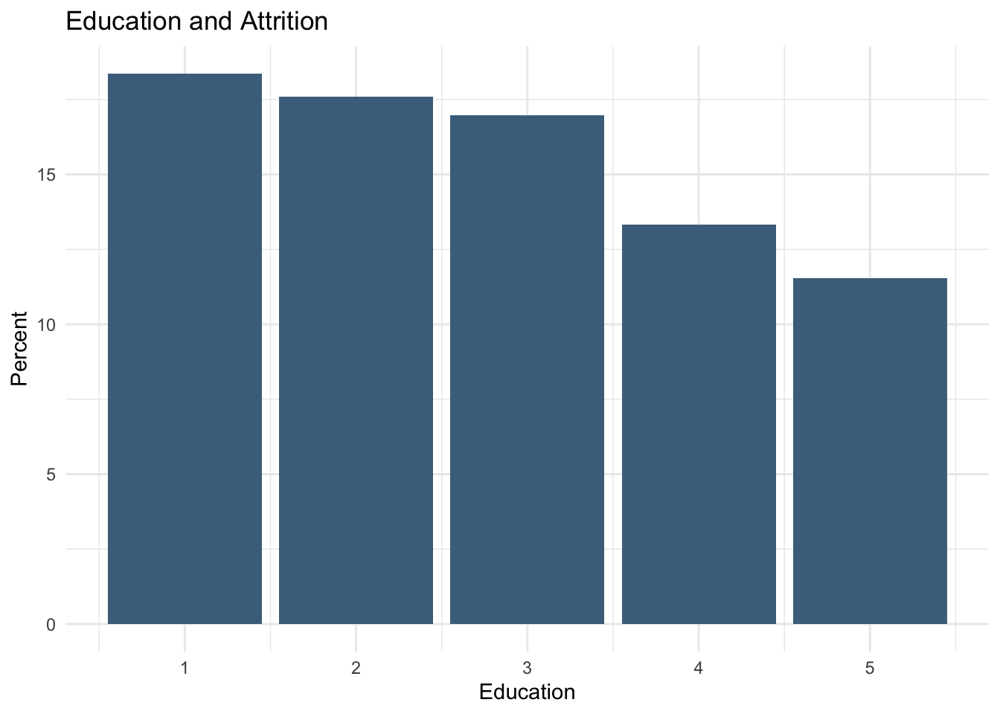
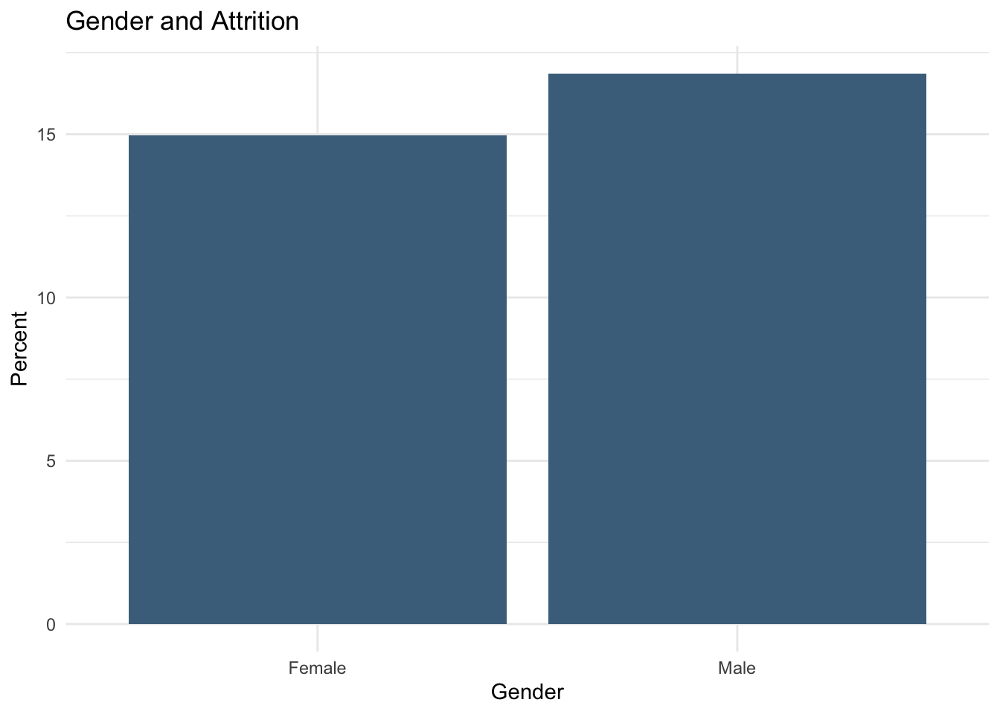
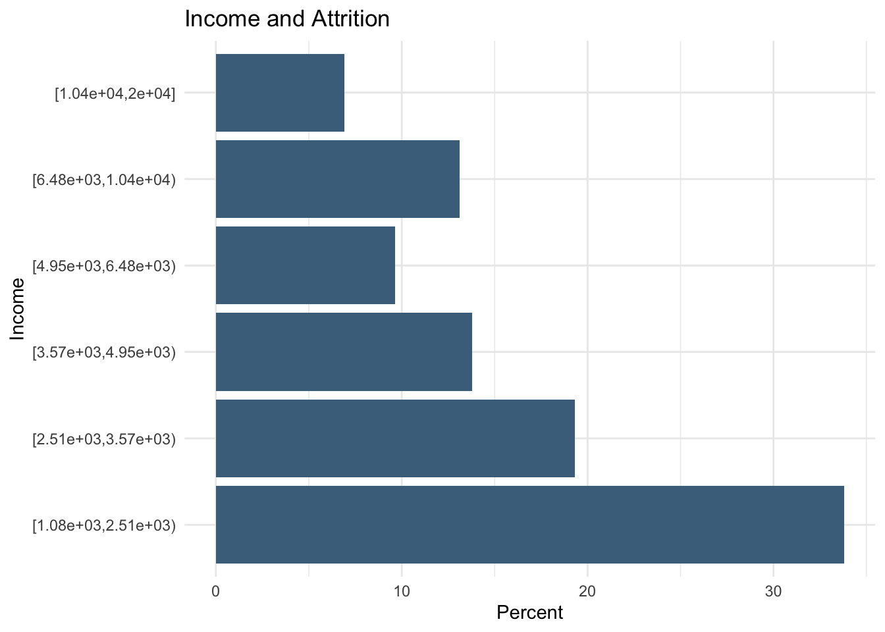
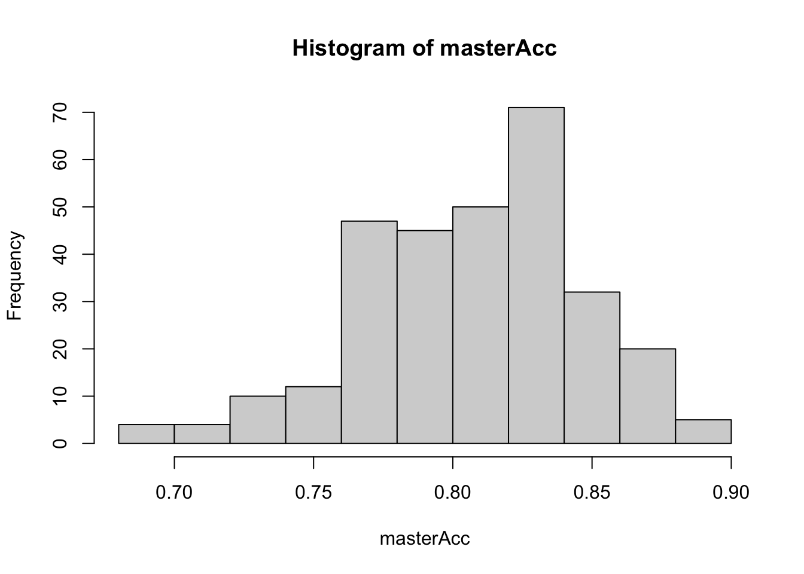
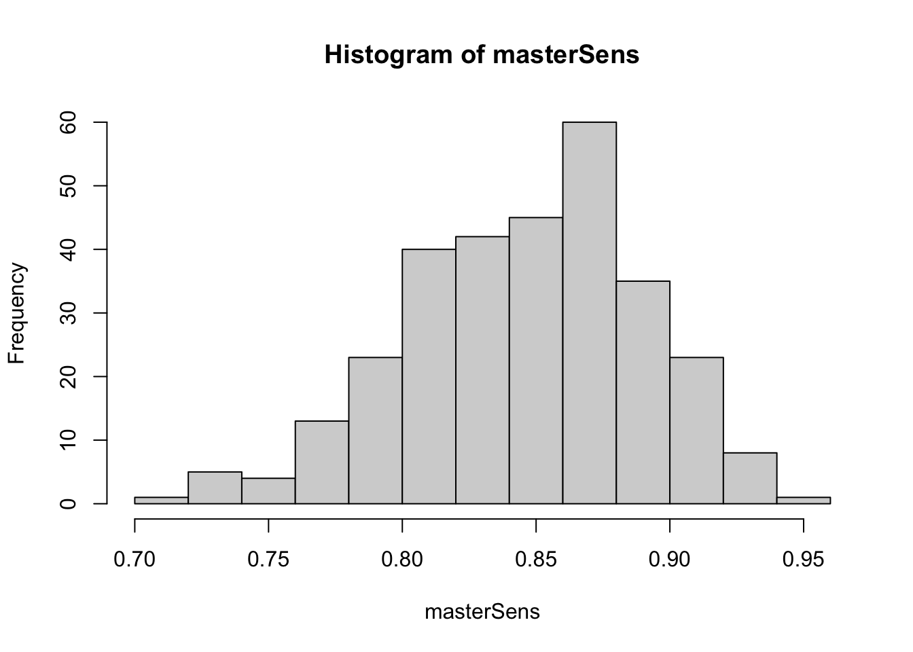
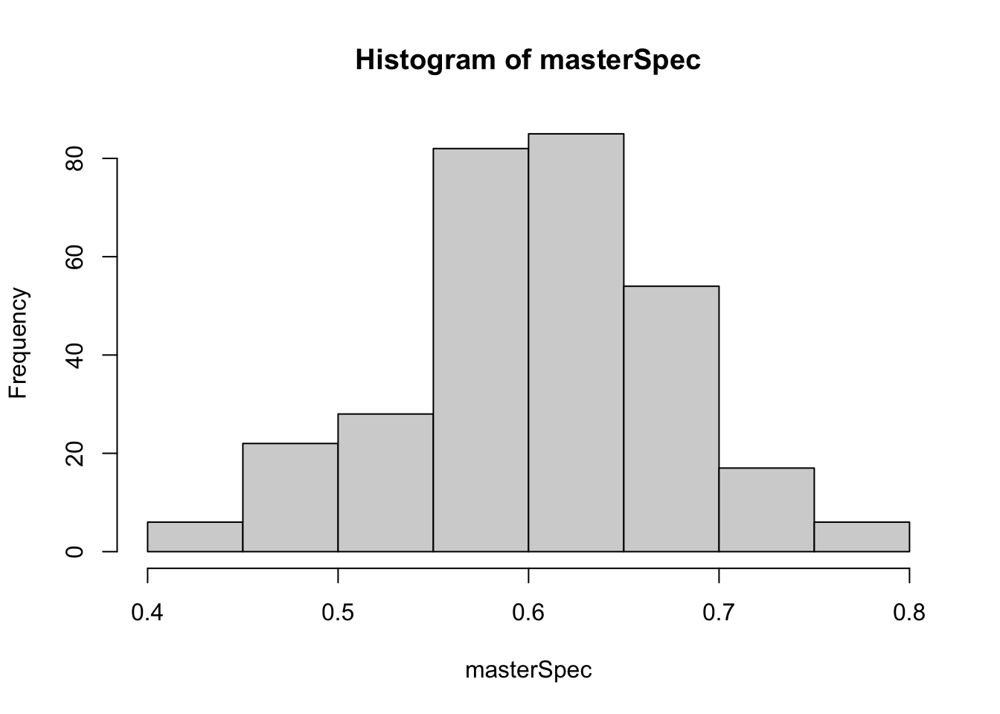

Case Study 2
Joaquin Dominguez and Jacob Gipson
11/29/2021
Load libraries
library(tidyverse)## Warning: package 'ggplot2' was built under R version 4.0.2## Warning: package 'tibble' was built under R version 4.0.2## Warning: package 'dplyr' was built under R version 4.0.2## Warning: package 'stringr' was built under R version 4.0.2library(janitor)## Warning: package 'janitor' was built under R version 4.0.2library(arules)## Warning: package 'arules' was built under R version 4.0.2library(aod)## Warning: package 'aod' was built under R version 4.0.2library(AICcmodavg)## Warning: package 'AICcmodavg' was built under R version 4.0.2library(dplyr)
library(class)## Warning: package 'class' was built under R version 4.0.2library(caret)## Warning: package 'caret' was built under R version 4.0.2library(e1071)## Warning: package 'e1071' was built under R version 4.0.2library(olsrr)## Warning: package 'olsrr' was built under R version 4.0.2library(leaps)## Warning: package 'leaps' was built under R version 4.0.2library(tibble)
work <- read_csv("https://raw.githubusercontent.com/j-dominguez9/Case-Study-2/main/Code/Data/CaseStudy2-data.csv")
head(work)## # A tibble: 6 × 36
## ID Age Attrition BusinessTravel DailyRate Department DistanceFromHome
## <dbl> <dbl> <chr> <chr> <dbl> <chr> <dbl>
## 1 1 32 No Travel_Rarely 117 Sales 13
## 2 2 40 No Travel_Rarely 1308 Research &… 14
## 3 3 35 No Travel_Frequently 200 Research &… 18
## 4 4 32 No Travel_Rarely 801 Sales 1
## 5 5 24 No Travel_Frequently 567 Research &… 2
## 6 6 27 No Travel_Frequently 294 Research &… 10
## # … with 29 more variables: Education <dbl>, EducationField <chr>,
## # EmployeeCount <dbl>, EmployeeNumber <dbl>, EnvironmentSatisfaction <dbl>,
## # Gender <chr>, HourlyRate <dbl>, JobInvolvement <dbl>, JobLevel <dbl>,
## # JobRole <chr>, JobSatisfaction <dbl>, MaritalStatus <chr>,
## # MonthlyIncome <dbl>, MonthlyRate <dbl>, NumCompaniesWorked <dbl>,
## # Over18 <chr>, OverTime <chr>, PercentSalaryHike <dbl>,
## # PerformanceRating <dbl>, RelationshipSatisfaction <dbl>, …Cleaning Data:
- remove columns that have no practical association with attrition and monthly income
- change attrition values to 0 and 1
- recode factor levels with snake case names
work <- work %>% janitor::clean_names()
work$employee_count <- NULL
work$over18 <- NULL
work$standard_hours <- NULL
work$id <- NULL
work$employee_number <- NULL
work <- work %>% mutate(attrition = if_else(attrition == "No", 0, 1))
head(work)## # A tibble: 6 × 31
## age attrition business_travel daily_rate department distance_from_h…
## <dbl> <dbl> <chr> <dbl> <chr> <dbl>
## 1 32 0 Travel_Rarely 117 Sales 13
## 2 40 0 Travel_Rarely 1308 Research & Development 14
## 3 35 0 Travel_Frequently 200 Research & Development 18
## 4 32 0 Travel_Rarely 801 Sales 1
## 5 24 0 Travel_Frequently 567 Research & Development 2
## 6 27 0 Travel_Frequently 294 Research & Development 10
## # … with 25 more variables: education <dbl>, education_field <chr>,
## # environment_satisfaction <dbl>, gender <chr>, hourly_rate <dbl>,
## # job_involvement <dbl>, job_level <dbl>, job_role <chr>,
## # job_satisfaction <dbl>, marital_status <chr>, monthly_income <dbl>,
## # monthly_rate <dbl>, num_companies_worked <dbl>, over_time <chr>,
## # percent_salary_hike <dbl>, performance_rating <dbl>,
## # relationship_satisfaction <dbl>, stock_option_level <dbl>, …work$department <- as.factor(work$department)
work$education_field <- as.factor(work$education_field)
work$gender <- as.factor(work$gender)
work$marital_status <- as.factor(work$marital_status)
work$over_time <- as.factor(work$over_time)
levels(work$education_field)## [1] "Human Resources" "Life Sciences" "Marketing" "Medical"
## [5] "Other" "Technical Degree"work$education_field <- recode_factor(work$education_field,"Human Resources" = 'human_resources',"Marketing" = 'marketing', "Medical" = 'medical',"Other" = 'other', "Technical Degree" = 'technical_degree', "Life Sciences" = 'life_sciences')
levels(work$education_field)## [1] "human_resources" "marketing" "medical" "other"
## [5] "technical_degree" "life_sciences"levels(work$department)## [1] "Human Resources" "Research & Development" "Sales"work$department <- recode_factor(work$department, "Human Resources" = 'human_resources', "Research & Development" = 'research_and_development', "Sales" = 'sales')
levels(work$job_role)## NULLwork$job_role <- recode_factor(work$job_role, "Healthcare Representative" = 'healthcare_representative', "Human Resources" = 'human_resources', "Laboratory Technician" = 'laboratory_technician', "Manager" = 'manager', "Manufacturing Director" = 'manufacturing_director', "Research Director" = 'research_director', "Research Scientist" = 'research_scientist', "Sales Executive" = 'sales_executive', "Sales Representative" = 'sales_representative')Exploratory Data Analysis
- Create graphs for each variable against attrition
- Divide into “internal” and “external” variables
- Set 30% attrition rate for a level of a variable as significant
### External, not significant
total <- work %>% select(education_field, attrition) %>%
group_by(education_field) %>% arrange(education_field) %>%
dplyr::count(education_field) %>% as.data.frame()
yes_count <- work %>% select(education_field, attrition) %>%
group_by(education_field) %>% arrange(education_field) %>%
filter(attrition == "1") %>% dplyr::count(education_field) %>%
dplyr::rename(yes = n) %>% as.data.frame()
head(yes_count)## education_field yes
## 1 human_resources 4
## 2 marketing 20
## 3 medical 37
## 4 other 9
## 5 technical_degree 17
## 6 life_sciences 53head(total)## education_field n
## 1 human_resources 15
## 2 marketing 100
## 3 medical 270
## 4 other 52
## 5 technical_degree 75
## 6 life_sciences 358join <- full_join(total, yes_count, by = "education_field") %>% mutate(perc = (yes/n)*100)
join$education_field <- as.factor(join$education_field)
head(join)## education_field n yes perc
## 1 human_resources 15 4 26.66667
## 2 marketing 100 20 20.00000
## 3 medical 270 37 13.70370
## 4 other 52 9 17.30769
## 5 technical_degree 75 17 22.66667
## 6 life_sciences 358 53 14.80447join %>% ggplot(aes(x = education_field, y = perc)) + geom_bar(stat = 'identity', fill = 'skyblue4') + theme_minimal() + ggtitle("Education Field and Attrition") + labs(x = "Education Field", y = "Percent")
### external, significant
total <- work %>% mutate(age = discretize(age, method = 'interval', breaks = 6)) %>% select(age, attrition) %>% group_by(age) %>% arrange(age) %>% dplyr::count(age) %>% as.data.frame()
yes_count <- work %>% mutate(age = discretize(age, method = 'interval', breaks = 6)) %>% select(age, attrition) %>% group_by(age) %>% arrange(age) %>% filter(attrition == "1") %>% dplyr::count(age) %>% dplyr::rename(yes = n) %>% as.data.frame()
head(total)## age n
## 1 [18,25) 55
## 2 [25,32) 206
## 3 [32,39) 287
## 4 [39,46) 165
## 5 [46,53) 103
## 6 [53,60] 54head(yes_count)## age yes
## 1 [18,25) 20
## 2 [25,32) 47
## 3 [32,39) 36
## 4 [39,46) 17
## 5 [46,53) 13
## 6 [53,60] 7join <- full_join(total, yes_count, by = "age")
join <- join %>% mutate(perc = (yes/n)*100)
join %>% ggplot(aes(x = age, y = perc)) + geom_bar(stat = 'identity', fill = 'skyblue4') + theme_minimal() + ggtitle("Age and Attrition") + labs(x = "Age", y = "Percent")
### internal, not significant
total <- work %>% select(attrition, business_travel) %>% group_by(business_travel) %>% arrange(business_travel) %>% count(business_travel) %>% as.data.frame()
yes_count <- work %>% select(business_travel, attrition) %>% group_by(business_travel) %>% arrange(business_travel) %>% filter(attrition == "1") %>% count(business_travel) %>% rename(yes = n) %>% as.data.frame()
head(total)## business_travel n
## 1 Non-Travel 94
## 2 Travel_Frequently 158
## 3 Travel_Rarely 618yes_count## business_travel yes
## 1 Non-Travel 11
## 2 Travel_Frequently 35
## 3 Travel_Rarely 94join <- full_join(total, yes_count, by = "business_travel")
join <- join %>% mutate(perc = (yes/n)*100)
join %>% ggplot(aes(x = business_travel, y = perc)) + geom_bar(stat = 'identity', fill = 'skyblue4') + theme_minimal() + ggtitle("Business Travel and Attrition") + labs(x = "Business Travel", y = "Percent")
### internal, not significant
total <- work %>% select(attrition, department) %>% group_by(department) %>% arrange(department) %>% count(department) %>% as.data.frame()
yes_count <- work %>% select(department, attrition) %>% group_by(department) %>% arrange(department) %>% filter(attrition == "1") %>% count(department) %>% rename(yes = n) %>% as.data.frame()
head(total)## department n
## 1 human_resources 35
## 2 research_and_development 562
## 3 sales 273yes_count## department yes
## 1 human_resources 6
## 2 research_and_development 75
## 3 sales 59join <- full_join(total, yes_count, by = "department")
join <- join %>% mutate(perc = (yes/n)*100)
join %>% ggplot(aes(x = department, y = perc)) + geom_bar(stat = 'identity', fill = 'skyblue4') + theme_minimal() + ggtitle("Department and Attrition") + labs(x = "Department", y = "Percent")
### external, significant
total <- work %>% select(attrition, distance_from_home) %>% mutate(distance_from_home = discretize(distance_from_home, method = 'interval', breaks = 6)) %>% group_by(distance_from_home) %>% arrange(distance_from_home) %>% dplyr::count(distance_from_home) %>% as.data.frame()
yes_count <- work %>% select(distance_from_home, attrition) %>% mutate(distance_from_home = discretize(distance_from_home, method = 'interval', breaks = 6)) %>% filter(attrition == "1") %>% group_by(distance_from_home) %>% arrange(distance_from_home) %>% dplyr::count(distance_from_home) %>% dplyr::rename(yes = n) %>% as.data.frame()
head(total)## distance_from_home n
## 1 [1,5.67) 367
## 2 [5.67,10.3) 233
## 3 [10.3,15) 53
## 4 [15,19.7) 78
## 5 [19.7,24.3) 74
## 6 [24.3,29] 65head(yes_count)## distance_from_home yes
## 1 [1,5.67) 52
## 2 [5.67,10.3) 30
## 3 [10.3,15) 12
## 4 [15,19.7) 13
## 5 [19.7,24.3) 24
## 6 [24.3,29] 9join <- full_join(total, yes_count, by = "distance_from_home")
join <- join %>% mutate(perc = (yes/n)*100)
join %>% ggplot(aes(x = distance_from_home, y = perc)) + geom_bar(stat = 'identity', fill = 'skyblue4') + theme_minimal() + ggtitle("Distance From Home and Attrition") + labs(x = "Distance from Home", y = "Percent")
### external, not significant
total <- work %>% select(attrition, education) %>% group_by(education) %>% arrange(education) %>% count(education) %>% as.data.frame()
yes_count <- work %>% select(education, attrition) %>% group_by(education) %>% arrange(education) %>% filter(attrition == "1") %>% count(education) %>% rename(yes = n) %>% as.data.frame()
head(total)## education n
## 1 1 98
## 2 2 182
## 3 3 324
## 4 4 240
## 5 5 26yes_count## education yes
## 1 1 18
## 2 2 32
## 3 3 55
## 4 4 32
## 5 5 3join <- full_join(total, yes_count, by = "education")
join <- join %>% mutate(perc = (yes/n)*100)
join %>% ggplot(aes(x = education, y = perc)) + geom_bar(stat = 'identity', fill = 'skyblue4') + theme_minimal() + ggtitle("Education and Attrition") + labs(x = "Education", y = "Percent")
### internal, not significant
total <- work %>% select(attrition, environment_satisfaction) %>% group_by(environment_satisfaction) %>% arrange(environment_satisfaction) %>% count(environment_satisfaction) %>% as.data.frame()
yes_count <- work %>% select(environment_satisfaction, attrition) %>% group_by(environment_satisfaction) %>% arrange(environment_satisfaction) %>% filter(attrition == "1") %>% count(environment_satisfaction) %>% rename(yes = n) %>% as.data.frame()
head(total)## environment_satisfaction n
## 1 1 172
## 2 2 178
## 3 3 258
## 4 4 262yes_count## environment_satisfaction yes
## 1 1 42
## 2 2 24
## 3 3 35
## 4 4 39join <- full_join(total, yes_count, by = "environment_satisfaction")
join <- join %>% mutate(perc = (yes/n)*100)
join %>% ggplot(aes(x = environment_satisfaction, y = perc)) + geom_bar(stat = 'identity', fill = 'skyblue4') + theme_minimal() + ggtitle("Environment Satisfaction and Attrition") + labs(x = "Environment Satisfaction", y = "Percent")
### external, not significant
total <- work %>% select(attrition, gender) %>% group_by(gender) %>% arrange(gender) %>% count(gender) %>% as.data.frame()
yes_count <- work %>% select(gender, attrition) %>% group_by(gender) %>% arrange(gender) %>% filter(attrition == "1") %>% count(gender) %>% rename(yes = n) %>% as.data.frame()
head(total)## gender n
## 1 Female 354
## 2 Male 516yes_count## gender yes
## 1 Female 53
## 2 Male 87join <- full_join(total, yes_count, by = "gender")
join <- join %>% mutate(perc = (yes/n)*100)
join %>% ggplot(aes(x = gender, y = perc)) + geom_bar(stat = 'identity', fill = 'skyblue4') + theme_minimal() + ggtitle("Gender and Attrition") + labs(x = "Gender", y = "Percent")
### internal, not significant
total <- work %>% select(attrition, hourly_rate) %>% mutate(hourly_rate = discretize(hourly_rate, method = 'interval', breaks = 10)) %>% group_by(hourly_rate) %>% arrange(hourly_rate) %>% count(hourly_rate) %>% as.data.frame()
yes_count <- work %>% select(hourly_rate, attrition) %>% mutate(hourly_rate = discretize(hourly_rate, method = 'interval', breaks = 10)) %>% filter(attrition == "1") %>% group_by(hourly_rate) %>% arrange(hourly_rate) %>% count(hourly_rate) %>% rename(yes = n) %>% as.data.frame()
head(total)## hourly_rate n
## 1 [30,37) 69
## 2 [37,44) 87
## 3 [44,51) 88
## 4 [51,58) 102
## 5 [58,65) 79
## 6 [65,72) 73yes_count## hourly_rate yes
## 1 [30,37) 10
## 2 [37,44) 10
## 3 [44,51) 14
## 4 [51,58) 15
## 5 [58,65) 11
## 6 [65,72) 20
## 7 [72,79) 13
## 8 [79,86) 18
## 9 [86,93) 10
## 10 [93,100] 19join <- full_join(total, yes_count, by = "hourly_rate")
join <- join %>% mutate(perc = (yes/n)*100)
join %>% ggplot(aes(x = hourly_rate, y = perc)) + geom_bar(stat = 'identity', fill = 'skyblue4') + theme_minimal() + ggtitle("Hourly Rate and Attrition") + labs(x = 'Hourly Rate', y = "Percent")
### internal, super significant
total <- work %>% select(attrition, job_involvement) %>% group_by(job_involvement) %>% arrange(job_involvement) %>% count(job_involvement) %>% as.data.frame()
yes_count <- work %>% select(job_involvement, attrition) %>% group_by(job_involvement) %>% arrange(job_involvement) %>% filter(attrition == "1") %>% count(job_involvement) %>% rename(yes = n) %>% as.data.frame()
head(total)## job_involvement n
## 1 1 47
## 2 2 228
## 3 3 514
## 4 4 81yes_count## job_involvement yes
## 1 1 22
## 2 2 44
## 3 3 67
## 4 4 7join <- full_join(total, yes_count, by = "job_involvement")
join <- join %>% mutate(perc = (yes/n)*100)
join## job_involvement n yes perc
## 1 1 47 22 46.808511
## 2 2 228 44 19.298246
## 3 3 514 67 13.035019
## 4 4 81 7 8.641975join %>% ggplot(aes(x = job_involvement, y = perc)) + geom_bar(stat = 'identity', fill = 'skyblue4') + theme_minimal() + ggtitle("Job Involvement and Attrition") + labs(x = "Job Involvement", y = "Percent")
### internal, not significant
total <- work %>% select(attrition, job_level) %>% group_by(job_level) %>% arrange(job_level) %>% count(job_level) %>% as.data.frame()
yes_count <- work %>% select(job_level, attrition) %>% group_by(job_level) %>% arrange(job_level) %>% filter(attrition == "1") %>% count(job_level) %>% rename(yes = n) %>% as.data.frame()
head(total)## job_level n
## 1 1 329
## 2 2 312
## 3 3 132
## 4 4 60
## 5 5 37yes_count## job_level yes
## 1 1 86
## 2 2 30
## 3 3 17
## 4 4 3
## 5 5 4join <- full_join(total, yes_count, by = "job_level")
join <- join %>% mutate(perc = (yes/n)*100)
join %>% ggplot(aes(x = job_level, y = perc)) + geom_bar(stat = 'identity', fill = 'skyblue4') + theme_minimal() + ggtitle("Job Level and Attrition") + labs(x = "Job Level", y = "Percent")
### internal, worth investigating
total <- work %>% select(attrition, job_role) %>% group_by(job_role) %>% arrange(job_role) %>% count(job_role) %>% as.data.frame()
yes_count <- work %>% select(job_role, attrition) %>% group_by(job_role) %>% arrange(job_role) %>% filter(attrition == "1") %>% count(job_role) %>% rename(yes = n) %>% as.data.frame()
head(total)## job_role n
## 1 healthcare_representative 76
## 2 human_resources 27
## 3 laboratory_technician 153
## 4 manager 51
## 5 manufacturing_director 87
## 6 research_director 51yes_count## job_role yes
## 1 healthcare_representative 8
## 2 human_resources 6
## 3 laboratory_technician 30
## 4 manager 4
## 5 manufacturing_director 2
## 6 research_director 1
## 7 research_scientist 32
## 8 sales_executive 33
## 9 sales_representative 24join <- full_join(total, yes_count, by = "job_role")
join <- join %>% mutate(perc = (yes/n)*100)
join %>% ggplot(aes(x = job_role, y = perc)) + geom_bar(stat = 'identity', fill = 'skyblue4') + theme_minimal() + coord_flip() + ggtitle("Job Role and Attrition") + labs(x = "Job Role", y = "Percent")
### internal, worth exploring
total <- work %>% select(attrition, job_satisfaction) %>% group_by(job_satisfaction) %>% arrange(job_satisfaction) %>% count(job_satisfaction) %>% as.data.frame()
yes_count <- work %>% select(job_satisfaction, attrition) %>% group_by(job_satisfaction) %>% arrange(job_satisfaction) %>% filter(attrition == "1") %>% count(job_satisfaction) %>% rename(yes = n) %>% as.data.frame()
head(total)## job_satisfaction n
## 1 1 179
## 2 2 166
## 3 3 254
## 4 4 271yes_count## job_satisfaction yes
## 1 1 38
## 2 2 31
## 3 3 43
## 4 4 28join <- full_join(total, yes_count, by = "job_satisfaction")
join <- join %>% mutate(perc = (yes/n)*100)
join %>% ggplot(aes(x = job_satisfaction, y = perc)) + geom_bar(stat = 'identity', fill = 'skyblue4') + theme_minimal() + ggtitle("Job Satisfaction and Attrition") + labs(x = "Job Satisfaction", y = "Percent")
### external, not significant
total <- work %>% select(attrition, marital_status) %>% group_by(marital_status) %>% arrange(marital_status) %>% count(marital_status) %>% as.data.frame()
yes_count <- work %>% select(marital_status, attrition) %>% group_by(marital_status) %>% arrange(marital_status) %>% filter(attrition == "1") %>% count(marital_status) %>% rename(yes = n) %>% as.data.frame()
head(total)## marital_status n
## 1 Divorced 191
## 2 Married 410
## 3 Single 269yes_count## marital_status yes
## 1 Divorced 12
## 2 Married 58
## 3 Single 70join <- full_join(total, yes_count, by = "marital_status")
join <- join %>% mutate(perc = (yes/n)*100)
join %>% ggplot(aes(x = marital_status, y = perc)) + geom_bar(stat = 'identity', fill = 'skyblue4') + theme_minimal() + ggtitle("Marital Status and Attrition") + labs(x = "Marital Status", y = "Percent")
### internal, significant
total <- work %>% select(attrition, monthly_income) %>%
mutate(monthly_income = discretize(monthly_income, breaks = 6)) %>%
group_by(monthly_income) %>% arrange(monthly_income) %>%
count(monthly_income) %>% as.data.frame()
yes_count <- work %>% select(attrition, monthly_income) %>%
mutate(monthly_income = discretize(monthly_income, breaks = 6)) %>% filter(attrition == "1") %>%
group_by(monthly_income) %>% arrange(monthly_income) %>%
count(monthly_income) %>% rename(yes = n) %>% as.data.frame()
yes_count## monthly_income yes
## 1 [1.08e+03,2.51e+03) 49
## 2 [2.51e+03,3.57e+03) 28
## 3 [3.57e+03,4.95e+03) 20
## 4 [4.95e+03,6.48e+03) 14
## 5 [6.48e+03,1.04e+04) 19
## 6 [1.04e+04,2e+04] 10join <- full_join(total, yes_count, by = "monthly_income")
join <- join %>% mutate(perc = (yes/n)*100)
join## monthly_income n yes perc
## 1 [1.08e+03,2.51e+03) 145 49 33.793103
## 2 [2.51e+03,3.57e+03) 145 28 19.310345
## 3 [3.57e+03,4.95e+03) 145 20 13.793103
## 4 [4.95e+03,6.48e+03) 145 14 9.655172
## 5 [6.48e+03,1.04e+04) 145 19 13.103448
## 6 [1.04e+04,2e+04] 145 10 6.896552join %>% ggplot(aes(x = monthly_income, y = perc)) + geom_bar(stat = 'identity', fill = 'skyblue4') + theme_minimal() + coord_flip() + ggtitle("Income and Attrition") + labs(x = "Income", y = "Percent")
### external, not significant
total <- work %>% select(attrition, num_companies_worked) %>% group_by(num_companies_worked) %>% arrange(num_companies_worked) %>% count(num_companies_worked) %>% as.data.frame()
yes_count <- work %>% select(num_companies_worked, attrition) %>% group_by(num_companies_worked) %>% arrange(num_companies_worked) %>% filter(attrition == "1") %>% count(num_companies_worked) %>% rename(yes = n) %>% as.data.frame()
head(total)## num_companies_worked n
## 1 0 111
## 2 1 320
## 3 2 74
## 4 3 91
## 5 4 85
## 6 5 43yes_count## num_companies_worked yes
## 1 0 11
## 2 1 60
## 3 2 9
## 4 3 9
## 5 4 7
## 6 5 11
## 7 6 9
## 8 7 11
## 9 8 5
## 10 9 8join <- full_join(total, yes_count, by = "num_companies_worked")
join <- join %>% mutate(perc = (yes/n)*100)
join %>% ggplot(aes(x = num_companies_worked, y = perc)) + geom_bar(stat = 'identity', fill = 'skyblue4') + theme_minimal() + ggtitle("Number of Companies Worked and Attrition") + labs(x = "Number of Companies Worked", y = "Percent")
### internal, significant
total <- work %>% select(attrition, over_time) %>% group_by(over_time) %>% arrange(over_time) %>% count(over_time) %>% as.data.frame()
yes_count <- work %>% select(over_time, attrition) %>% group_by(over_time) %>% arrange(over_time) %>% filter(attrition == "1") %>% count(over_time) %>% rename(yes = n) %>% as.data.frame()
head(total)## over_time n
## 1 No 618
## 2 Yes 252yes_count## over_time yes
## 1 No 60
## 2 Yes 80join <- full_join(total, yes_count, by = "over_time")
join <- join %>% mutate(perc = (yes/n)*100)
join## over_time n yes perc
## 1 No 618 60 9.708738
## 2 Yes 252 80 31.746032join %>% ggplot(aes(x = over_time, y = perc)) + geom_bar(stat = 'identity', fill = 'skyblue4') + theme_minimal() + ggtitle("Over Time and Attrition") + labs(x = "Over Time", y = "Percent")
### internal, significant
total <- work %>% select(attrition, percent_salary_hike) %>% group_by(percent_salary_hike) %>% arrange(percent_salary_hike) %>% count(percent_salary_hike) %>% as.data.frame()
yes_count <- work %>% select(percent_salary_hike, attrition) %>% group_by(percent_salary_hike) %>% arrange(percent_salary_hike) %>% filter(attrition == "1") %>% count(percent_salary_hike) %>% rename(yes = n) %>% as.data.frame()
head(total)## percent_salary_hike n
## 1 11 126
## 2 12 119
## 3 13 123
## 4 14 120
## 5 15 54
## 6 16 43yes_count## percent_salary_hike yes
## 1 11 24
## 2 12 17
## 3 13 21
## 4 14 13
## 5 15 8
## 6 16 10
## 7 17 10
## 8 18 9
## 9 19 5
## 10 20 3
## 11 21 2
## 12 22 7
## 13 23 5
## 14 24 5
## 15 25 1join <- full_join(total, yes_count, by = "percent_salary_hike")
join <- join %>% mutate(perc = (yes/n)*100)
join %>% ggplot(aes(x = percent_salary_hike, y = perc)) + geom_bar(stat = 'identity', fill = 'skyblue4') + theme_minimal() + ggtitle("Percent Salary Hike and Attrition") + labs(x = "Percent Salary Hike", y = "Percent")
### internal, not significant
total <- work %>% select(attrition, performance_rating) %>% group_by(performance_rating) %>% arrange(performance_rating) %>% count(performance_rating) %>% as.data.frame()
yes_count <- work %>% select(performance_rating, attrition) %>% group_by(performance_rating) %>% arrange(performance_rating) %>% filter(attrition == "1") %>% count(performance_rating) %>% rename(yes = n) %>% as.data.frame()
head(total)## performance_rating n
## 1 3 738
## 2 4 132yes_count## performance_rating yes
## 1 3 117
## 2 4 23join <- full_join(total, yes_count, by = "performance_rating")
join <- join %>% mutate(perc = (yes/n)*100)
join %>% ggplot(aes(x = performance_rating, y = perc)) + geom_bar(stat = 'identity', fill = 'skyblue4') + theme_minimal() + ggtitle("Performance Rating and Attrition") + labs(x = "Performance Rating", y = "Percent")
### external, not significant
total <- work %>% select(attrition, relationship_satisfaction) %>% group_by(relationship_satisfaction) %>% arrange(relationship_satisfaction) %>% count(relationship_satisfaction) %>% as.data.frame()
yes_count <- work %>% select(relationship_satisfaction, attrition) %>% group_by(relationship_satisfaction) %>% arrange(relationship_satisfaction) %>% filter(attrition == "1") %>% count(relationship_satisfaction) %>% rename(yes = n) %>% as.data.frame()
head(total)## relationship_satisfaction n
## 1 1 174
## 2 2 171
## 3 3 261
## 4 4 264yes_count## relationship_satisfaction yes
## 1 1 35
## 2 2 27
## 3 3 36
## 4 4 42join <- full_join(total, yes_count, by = "relationship_satisfaction")
join <- join %>% mutate(perc = (yes/n)*100)
join %>% ggplot(aes(x = relationship_satisfaction, y = perc)) + geom_bar(stat = 'identity', fill = 'skyblue4') + theme_minimal() + ggtitle("Relationship Satisfaction and Attrition") + labs(x = "Relationship Satisfaction", y = "Percent")
### internal, not significant
total <- work %>% select(attrition, stock_option_level) %>% group_by(stock_option_level) %>% arrange(stock_option_level) %>% count(stock_option_level) %>% as.data.frame()
yes_count <- work %>% select(stock_option_level, attrition) %>% group_by(stock_option_level) %>% arrange(stock_option_level) %>% filter(attrition == "1") %>% count(stock_option_level) %>% rename(yes = n) %>% as.data.frame()
head(total)## stock_option_level n
## 1 0 379
## 2 1 355
## 3 2 81
## 4 3 55yes_count## stock_option_level yes
## 1 0 98
## 2 1 27
## 3 2 3
## 4 3 12join <- full_join(total, yes_count, by = "stock_option_level")
join <- join %>% mutate(perc = (yes/n)*100)
join %>% ggplot(aes(x = stock_option_level, y = perc)) + geom_bar(stat = 'identity', fill = 'skyblue4') + theme_minimal() + ggtitle("Stock Option Level and Attrition") + labs(x = "Stock Option Level", y = "Percent")
### external, worth exploring
total <- work %>% select(attrition, total_working_years) %>% mutate(total_working_years = discretize(total_working_years, method = 'interval', breaks = 5)) %>% group_by(total_working_years) %>% arrange(total_working_years) %>% count(total_working_years) %>% as.data.frame()
yes_count <- work %>% select(total_working_years, attrition) %>% filter(attrition == "1") %>%
mutate(total_working_years = discretize(total_working_years, method = 'interval', breaks = 5)) %>% group_by(total_working_years) %>% arrange(total_working_years) %>% filter(attrition == "1") %>% dplyr::count(total_working_years) %>% dplyr::rename(yes = n) %>% as.data.frame()
head(total)## total_working_years n
## 1 [0,8) 305
## 2 [8,16) 370
## 3 [16,24) 129
## 4 [24,32) 47
## 5 [32,40] 19yes_count## total_working_years yes
## 1 [0,8) 79
## 2 [8,16) 42
## 3 [16,24) 13
## 4 [24,32) 4
## 5 [32,40] 2join <- full_join(total, yes_count, by = "total_working_years")
join <- join %>% mutate(perc = (yes/n)*100)
join %>% ggplot(aes(x = total_working_years, y = perc)) + geom_bar(stat = 'identity', fill = 'skyblue4') + theme_minimal() + ggtitle("Total Working Years and Attrition") + labs(x = "Total Working Years", y = "Percent")
### internal?, not significant
total <- work %>% select(attrition, training_times_last_year) %>% group_by(training_times_last_year) %>% arrange(training_times_last_year) %>% count(training_times_last_year) %>% as.data.frame()
yes_count <- work %>% select(training_times_last_year, attrition) %>% group_by(training_times_last_year) %>% arrange(training_times_last_year) %>% filter(attrition == "1") %>% count(training_times_last_year) %>% rename(yes = n) %>% as.data.frame()
head(total)## training_times_last_year n
## 1 0 30
## 2 1 39
## 3 2 309
## 4 3 308
## 5 4 73
## 6 5 75yes_count## training_times_last_year yes
## 1 0 8
## 2 1 5
## 3 2 57
## 4 3 43
## 5 4 16
## 6 5 7
## 7 6 4join <- full_join(total, yes_count, by = "training_times_last_year")
join <- join %>% mutate(perc = (yes/n)*100)
join %>% ggplot(aes(x = training_times_last_year, y = perc)) + geom_bar(stat = 'identity', fill = 'skyblue4') + theme_minimal() + ggtitle("Training Times Last Year and Attrition") + labs(x = "Training Times Last Year", y = "Percent")
### internal/external, significant
total <- work %>% select(attrition, work_life_balance) %>% group_by(work_life_balance) %>% arrange(work_life_balance) %>% count(work_life_balance) %>% as.data.frame()
yes_count <- work %>% select(work_life_balance, attrition) %>% group_by(work_life_balance) %>% arrange(work_life_balance) %>% filter(attrition == "1") %>% count(work_life_balance) %>% rename(yes = n) %>% as.data.frame()
head(total)## work_life_balance n
## 1 1 48
## 2 2 192
## 3 3 532
## 4 4 98yes_count## work_life_balance yes
## 1 1 17
## 2 2 30
## 3 3 80
## 4 4 13join <- full_join(total, yes_count, by = "work_life_balance")
join <- join %>% mutate(perc = (yes/n)*100)
join %>% ggplot(aes(x = work_life_balance, y = perc)) + geom_bar(stat = 'identity', fill = 'skyblue4') + theme_minimal() + ggtitle("Work Life Balance and Attrition") + labs(x = "Work Life Balance", y = "Percent")
### external, not significant
total <- work %>% select(attrition, years_at_company) %>% mutate(years_at_company = discretize(years_at_company, method = 'interval', breaks = 4)) %>% group_by(years_at_company) %>% arrange(years_at_company) %>% count(years_at_company) %>% as.data.frame()
yes_count <- work %>% select(years_at_company, attrition) %>% mutate(years_at_company = discretize(years_at_company, method = 'interval', breaks = 4)) %>% filter(attrition == "1") %>% group_by(years_at_company) %>% arrange(years_at_company) %>% count(years_at_company) %>% rename(yes = n) %>% as.data.frame()
head(total)## years_at_company n
## 1 [0,10) 644
## 2 [10,20) 175
## 3 [20,30) 42
## 4 [30,40] 9yes_count## years_at_company yes
## 1 [0,10) 114
## 2 [10,20) 21
## 3 [20,30) 3
## 4 [30,40] 2join <- full_join(total, yes_count, by = "years_at_company")
join <- join %>% mutate(perc = (yes/n)*100)
join %>% ggplot(aes(x = years_at_company, y = perc)) + geom_bar(stat = 'identity', fill = 'skyblue4') + theme_minimal() + ggtitle("Years at Company and Attrition") + labs(x = "Years at Company", y = "Percent")
### external, not significant
total <- work %>% select(attrition, years_in_current_role) %>% mutate(years_in_current_role = discretize(years_in_current_role, method = 'interval', breaks = 6)) %>% group_by(years_in_current_role) %>% arrange(years_in_current_role) %>% count(years_in_current_role) %>% as.data.frame()
yes_count <- work %>% select(years_in_current_role, attrition) %>% mutate(years_in_current_role = discretize(years_in_current_role, method = 'interval', breaks = 6)) %>% filter(attrition == "1") %>% group_by(years_in_current_role) %>% arrange(years_in_current_role) %>% count(years_in_current_role) %>% rename(yes = n) %>% as.data.frame()
head(total)## years_in_current_role n
## 1 [0,3) 412
## 2 [3,6) 147
## 3 [6,9) 209
## 4 [9,12) 69
## 5 [12,15) 23
## 6 [15,18] 10yes_count## years_in_current_role yes
## 1 [0,3) 93
## 2 [3,6) 15
## 3 [6,9) 23
## 4 [9,12) 5
## 5 [12,15) 3
## 6 [15,18] 1join <- full_join(total, yes_count, by = "years_in_current_role")
join <- join %>% mutate(perc = (yes/n)*100)
join %>% ggplot(aes(x = years_in_current_role, y = perc)) + geom_bar(stat = 'identity', fill = 'skyblue4') + theme_minimal() + ggtitle("Years in Current Role and Attrition") + labs(x = "Years in Current Role", y = "Percent")
### internal, not significant
total <- work %>% select(attrition, years_since_last_promotion) %>% mutate(years_since_last_promotion = discretize(years_since_last_promotion, method = 'interval', breaks = 5)) %>% group_by(years_since_last_promotion) %>% arrange(years_since_last_promotion) %>% count(years_since_last_promotion) %>% as.data.frame()
yes_count <- work %>% select(years_since_last_promotion, attrition) %>% mutate(years_since_last_promotion = discretize(years_since_last_promotion, method = 'interval', breaks = 5)) %>% filter(attrition == "1") %>% group_by(years_since_last_promotion) %>% arrange(years_since_last_promotion) %>% count(years_since_last_promotion) %>% rename(yes = n) %>% as.data.frame()
head(total)## years_since_last_promotion n
## 1 [0,3) 650
## 2 [3,6) 94
## 3 [6,9) 76
## 4 [9,12) 27
## 5 [12,15] 23yes_count## years_since_last_promotion yes
## 1 [0,3) 108
## 2 [3,6) 9
## 3 [6,9) 13
## 4 [9,12) 6
## 5 [12,15] 4join <- full_join(total, yes_count, by = "years_since_last_promotion")
join <- join %>% mutate(perc = (yes/n)*100)
join %>% ggplot(aes(x = years_since_last_promotion, y = perc)) + geom_bar(stat = 'identity', fill = 'skyblue4') + theme_minimal() + ggtitle("Years Since Last Promotion") + labs(x = "Years Since Last Promotion", y = "Percent")
### internal, not significant
total <- work %>% select(attrition, years_with_curr_manager) %>%
mutate(years_with_curr_manager = discretize(years_with_curr_manager, method = 'interval', breaks = 5)) %>%
group_by(years_with_curr_manager) %>% arrange(years_with_curr_manager) %>% count(years_with_curr_manager) %>% as.data.frame()
yes_count <- work %>% select(years_with_curr_manager, attrition) %>%
mutate(years_with_curr_manager = discretize(years_with_curr_manager, method = 'interval', breaks = 5)) %>%
filter(attrition == "1") %>% group_by(years_with_curr_manager) %>% arrange(years_with_curr_manager) %>%
count(years_with_curr_manager) %>% rename(yes = n) %>% as.data.frame()
head(total)## years_with_curr_manager n
## 1 [0,3.4) 484
## 2 [3.4,6.8) 85
## 3 [6.8,10.2) 261
## 4 [10.2,13.6) 31
## 5 [13.6,17] 9yes_count## years_with_curr_manager yes
## 1 [0,3.4) 95
## 2 [3.4,6.8) 11
## 3 [6.8,10.2) 32
## 4 [10.2,13.6) 1
## 5 [13.6,17] 1join <- full_join(total, yes_count, by = "years_with_curr_manager")
join <- join %>% mutate(perc = (yes/n)*100)
join %>% ggplot(aes(x = years_with_curr_manager, y = perc)) + geom_bar(stat = 'identity', fill = 'skyblue4') + theme_minimal() + ggtitle("Years with Current Manager and Attrition") + labs(x = "Years With Current Manager", y = "Percent")
I. Top Factors Contributing to Attrition
Significance:
Setting significance at >30% of attrition in at least one level (if factor)
Internal
- Work/Life Balance
- Percent Salary Hike
- Overtime
- Income
- Job Involvement
Worth Exploring:
- Job Satisfaction
- Job Role
External
- Work/Life Balance
- Distance from Home
- Age
Worth Exploring:
- Total Working Years
Model Comparison:
Used regression modeling to examine those variables using AIC model selection to choose top 3 contributors to attrition.
Made all combinations and interactions for 3 variables to predict attrition
perc_sal_hike.mod <- glm(attrition ~ percent_salary_hike, data = work, family = 'binomial')
over_time.mod <- glm(attrition ~ factor(over_time), data = work, family = 'binomial')
monthly_inc.mod <- glm(attrition ~ monthly_income, data = work, family = 'binomial')
job_inv.mod <- glm(attrition ~ factor(job_involvement), data = work, family = 'binomial')
wlb.mod <- glm(attrition ~ factor(work_life_balance), data = work, family = 'binomial')
psh.ot.mod <- glm(attrition ~ percent_salary_hike + factor(over_time), data = work, family = 'binomial')
psh.mi.mod <- glm(attrition ~ percent_salary_hike + monthly_income, data = work, family = 'binomial')
psh.ji.mod <- glm(attrition ~ percent_salary_hike + factor(job_involvement), data = work, family = 'binomial')
psh.wlb.mod <- psh.ot.mod <- glm(attrition ~ percent_salary_hike + factor(work_life_balance), data = work, family = 'binomial')
ot.mi.mod <- glm(attrition ~ factor(over_time) + monthly_income, data = work, family = 'binomial')
ot.ji.mod <- glm(attrition ~ factor(over_time) + factor(job_involvement), data = work, family = 'binomial')
ot.wlb.mod <- glm(attrition ~ factor(over_time) + factor(work_life_balance), data = work, family = 'binomial')
mi.ji.mod <- glm(attrition ~ monthly_income + factor(job_involvement), data = work, family = 'binomial')
mi.wlb.mod <- glm(attrition ~ monthly_income + factor(work_life_balance), data = work, family = 'binomial')
ji.wlb.mod <- glm(attrition ~ factor(job_involvement) + factor(work_life_balance), data = work, family = 'binomial')
mi.ot.int.mod <- glm(attrition ~ factor(over_time)*monthly_income, data = work, family = 'binomial')
mi.ji.int.mod <- glm(attrition ~ factor(over_time)*factor(job_involvement), data = work, family = 'binomial')
mi.wlb.int.mod <- glm(attrition ~ monthly_income*factor(work_life_balance), data = work, family = 'binomial')
ot.ji.wlb.mod <- glm(attrition ~ factor(over_time) + factor(job_involvement) + factor(work_life_balance), data = work, family = 'binomial')
ot.ji.wlb.int.mod <- glm(attrition ~ factor(over_time) + factor(job_involvement)*factor(work_life_balance), data = work, family = 'binomial')
ot.wlb.int.ji.mod <- glm(attrition ~ factor(over_time)*factor(work_life_balance) + factor(job_involvement), data = work, family = 'binomial')
ot.ji.mi.mod <- glm(attrition ~ factor(over_time) + factor(job_involvement) + monthly_income, data = work, family = 'binomial')
ot.ji.mi.int.mod <- glm(attrition ~ factor(over_time) + factor(job_involvement)*monthly_income, data = work, family = 'binomial')
ot.ji.int.mi.mod <- glm(attrition ~ factor(over_time)*factor(job_involvement) + monthly_income, data = work, family = 'binomial')
models <- list(over_time.mod, monthly_inc.mod, job_inv.mod, wlb.mod, psh.ji.mod, ot.mi.mod, ot.ji.mod, ot.wlb.mod, mi.ji.mod, mi.wlb.mod, ji.wlb.mod, mi.ot.int.mod, mi.ji.int.mod, mi.wlb.int.mod, ot.ji.wlb.mod, ot.ji.wlb.int.mod, ot.wlb.int.ji.mod, ot.ji.mi.mod, ot.ji.mi.int.mod, ot.ji.int.mi.mod)
model.names <- c('over_time.mod', 'monthly_inc.mod', 'job_inv.mod', 'wlb.mod', 'psh.ji.mod', 'ot.mi.mod', 'ot.ji.mod', 'ot.wlb.mod', 'mi.ji.mod', 'mi.wlb.mod', 'ji.wlb.mod', 'mi.ot.int.mod', 'mi.ji.int.mod', 'mi.wlb.int.mod', 'ot.ji.wlb.mod', 'ot.ji.wlb.int.mod', 'ot.wlb.int.ji.mod', 'ot.ji.mi.mod', 'ot.ji.mi.int.mod', 'ot.ji.int.mi.mod')
aictab(cand.set = models, modnames = model.names)##
## Model selection based on AICc:
##
## K AICc Delta_AICc AICcWt Cum.Wt LL
## ot.ji.mi.mod 6 663.90 0.00 0.69 0.69 -325.90
## ot.ji.mi.int.mod 9 666.01 2.11 0.24 0.93 -323.90
## ot.ji.int.mi.mod 9 668.44 4.54 0.07 1.00 -325.11
## ot.ji.wlb.mod 8 680.60 16.70 0.00 1.00 -332.22
## ot.wlb.int.ji.mod 11 685.47 21.57 0.00 1.00 -331.58
## ot.ji.mod 5 687.15 23.25 0.00 1.00 -338.54
## mi.ot.int.mod 4 689.08 25.18 0.00 1.00 -340.52
## ot.mi.mod 3 689.56 25.66 0.00 1.00 -341.77
## ot.ji.wlb.int.mod 17 691.04 27.14 0.00 1.00 -328.16
## mi.ji.int.mod 8 691.62 27.72 0.00 1.00 -337.73
## ot.wlb.mod 5 706.19 42.29 0.00 1.00 -348.06
## over_time.mod 2 712.82 48.92 0.00 1.00 -354.40
## mi.ji.mod 5 718.54 54.64 0.00 1.00 -354.24
## ji.wlb.mod 7 736.70 72.80 0.00 1.00 -361.29
## mi.wlb.mod 5 741.24 77.34 0.00 1.00 -365.59
## job_inv.mod 4 742.23 78.33 0.00 1.00 -367.09
## mi.wlb.int.mod 8 742.68 78.78 0.00 1.00 -363.26
## psh.ji.mod 5 744.01 80.10 0.00 1.00 -366.97
## monthly_inc.mod 2 746.55 82.65 0.00 1.00 -371.27
## wlb.mod 4 764.04 100.14 0.00 1.00 -378.00Output dictates that the top 3 internal variables are:
- over_time
- job_involvement
- monthly_income
We used AIC model selection to distinguish among a set of possible models describing the relationship between over time, job involvement, monthly income, and attrition.The best-fit model, carrying 69% of the cumulative model weight, included every parameter with no interaction effects.
Our best model to predict attrition, thus is represented in the formula:
Attrition = β0 + β1(over_time) + β2(job_involvement) + β3(monthly_income)
II. Predicting Attrition
Building NB model
We created a training set to build our model and a validation set that we will use in the end to judge our model.
set.seed(3)
#We will create a for loop to evaluate or model across 100 iterations
iterations = 300
masterAcc = matrix(nrow = iterations)
masterSens = matrix(nrow = iterations)
masterSpec = matrix(nrow = iterations)
splitPerc=.75
for(j in 1:iterations)
{
trainIndices = sample(1:dim(work)[1],round(splitPerc*dim(work)[1]))
train1 = work[trainIndices,]
test1 = work[-trainIndices,]
model = naiveBayes(attrition ~
age+
environment_satisfaction+
job_satisfaction+
distance_from_home+
education_field+
hourly_rate+
job_involvement+
job_level+
job_role+
marital_status+
monthly_income+
num_companies_worked+
over_time+
stock_option_level+
total_working_years+
training_times_last_year+
work_life_balance+
years_at_company+
years_in_current_role+
years_with_curr_manager, data = train1)
classifications = predict(model, test1)
actual = test1$attrition
CM = confusionMatrix(table(classifications,actual))
masterAcc[j] = CM$overall[1]
masterSens[j] = CM$byClass[1]
masterSpec[j] = CM$byClass[2]
}
MeanAcc = colMeans(masterAcc)
MeanSens = colMeans(masterSens)
MeanSpec = colMeans(masterSpec)
MeanAcc## [1] 0.8070795MeanSens## [1] 0.8459928MeanSpec## [1] 0.6062724hist(masterAcc)
hist(masterSens)
hist(masterSpec)
sum(masterSpec > 0.6)## [1] 162Our model predicting attrition has a mean accuracy of 80.7%, mean sensitivity of 84.6% and mean specificity of 60.63%.
III. Job Role Insights
In this next part, we’ll examine job role specific trends.
First, we wanted to investigate if there’s any disparity with respect to job satisfaction throughout job roles
### job satisfaction by role
js <- work %>% select(job_role, job_satisfaction) %>% group_by(job_role) %>% mutate(job_role = factor(job_role)) %>% summarize(mean(job_satisfaction)) %>% as.data.frame() %>% rename(average_job_satisfaction = 'mean(job_satisfaction)')
js## job_role average_job_satisfaction
## 1 healthcare_representative 2.828947
## 2 human_resources 2.555556
## 3 laboratory_technician 2.686275
## 4 manager 2.509804
## 5 manufacturing_director 2.724138
## 6 research_director 2.490196
## 7 research_scientist 2.802326
## 8 sales_executive 2.725000
## 9 sales_representative 2.698113js %>% ggplot(aes(x = job_role, y = average_job_satisfaction)) + geom_bar(stat = 'identity', fill = 'skyblue4') + coord_flip() + theme_minimal() + ggtitle("Mean Job Satisfaction by Job Role") + labs(x = "Job Role", y = "Average Job Satisfaction")
Analysis:
Through visual inspection from the graph above, there doesn’t appear to be a noticeable difference in job satisfaction by job role. Notwithstanding, healthcare representatives had the highest average job satisfaction with 2.83 and research director had the lowest with 2.49. Although there wasn’t a notable difference between job roles, it is always recommendable to increase average job satisfaction across all job roles.
Next, as we established earlier, “over time” is a top contributing factor to attrition, so we wanted to examine how “over time” percentages are represented across job roles.
### Roles with highest amount of overtime
total <- work %>% select(job_role, over_time) %>% mutate(over_time = if_else(over_time == "No", 0, 1)) %>%
group_by(job_role) %>% arrange(job_role) %>% count(job_role) %>% as.data.frame()
yes_count <- work %>% select(job_role, over_time) %>%
mutate(over_time = if_else(over_time == "No", 0, 1)) %>%
group_by(job_role) %>% arrange(job_role) %>% filter(over_time == "1") %>%
count(job_role) %>% rename(yes = n) %>% as.data.frame()
total## job_role n
## 1 healthcare_representative 76
## 2 human_resources 27
## 3 laboratory_technician 153
## 4 manager 51
## 5 manufacturing_director 87
## 6 research_director 51
## 7 research_scientist 172
## 8 sales_executive 200
## 9 sales_representative 53yes_count## job_role yes
## 1 healthcare_representative 22
## 2 human_resources 6
## 3 laboratory_technician 33
## 4 manager 10
## 5 manufacturing_director 23
## 6 research_director 16
## 7 research_scientist 65
## 8 sales_executive 59
## 9 sales_representative 18join <- full_join(total, yes_count, by = 'job_role') %>% mutate(perc = (yes/n)*100)
join## job_role n yes perc
## 1 healthcare_representative 76 22 28.94737
## 2 human_resources 27 6 22.22222
## 3 laboratory_technician 153 33 21.56863
## 4 manager 51 10 19.60784
## 5 manufacturing_director 87 23 26.43678
## 6 research_director 51 16 31.37255
## 7 research_scientist 172 65 37.79070
## 8 sales_executive 200 59 29.50000
## 9 sales_representative 53 18 33.96226join %>% ggplot(aes(x = job_role, y = perc)) + geom_bar(stat = 'identity', fill = 'skyblue4') + theme_minimal() + coord_flip() + ggtitle("Percent of Over Time by Job Role") + labs(x = "Job Role", y = "Percent")
Analysis:
In this case, there is a notable difference between job roles in over time. Manager role had the lowest percentage of over time with 19.6% and research scientist had the highest percentage of over time with 37.8%. In the interest of lowering attrition rates, especially among those roles with higher percentages, it is recommendable to limit over time.
We also examined elements of gender parity with respect to job roles. First, we looked at the distribution of monthly income between genders in each job role. Then, we examined job role occupancy by gender.
### Gender parity t-test with respect to monthly income
mon_inc_male <- work %>% select(monthly_income, gender) %>% filter(gender == "Male")
mon_inc_female <- work %>% select(monthly_income, gender) %>% filter(gender == "Female")
t.test(mon_inc_male$monthly_income, mon_inc_female$monthly_income)##
## Welch Two Sample t-test
##
## data: mon_inc_male$monthly_income and mon_inc_female$monthly_income
## t = -1.6207, df = 747.5, p-value = 0.1055
## alternative hypothesis: true difference in means is not equal to 0
## 95 percent confidence interval:
## -1140.8560 109.0107
## sample estimates:
## mean of x mean of y
## 6180.337 6696.260First, we ran a t-test to establish whether across all job roles there was any difference in monthly income between male and female employees. At a 0.05 significance level, there is not enough evidence to suggest that there is any difference between male and female employees with respect to monthly income (p-value = 0.1055, Welch Two sample t-test).
work %>% select(gender, monthly_income, job_role) %>% group_by(job_role, gender) %>% arrange(job_role) %>% summarise(mean(monthly_income))## `summarise()` has grouped output by 'job_role'. You can override using the `.groups` argument.## # A tibble: 18 × 3
## # Groups: job_role [9]
## job_role gender `mean(monthly_income)`
## <fct> <fct> <dbl>
## 1 healthcare_representative Female 7514.
## 2 healthcare_representative Male 7375.
## 3 human_resources Female 3383.
## 4 human_resources Male 3236.
## 5 laboratory_technician Female 3384.
## 6 laboratory_technician Male 3141.
## 7 manager Female 17156.
## 8 manager Male 17237.
## 9 manufacturing_director Female 7452.
## 10 manufacturing_director Male 7558.
## 11 research_director Female 14874.
## 12 research_director Male 16470.
## 13 research_scientist Female 3411.
## 14 research_scientist Male 3167.
## 15 sales_executive Female 6795.
## 16 sales_executive Male 6955.
## 17 sales_representative Female 2676.
## 18 sales_representative Male 2630.work %>% select(gender, monthly_income, job_role) %>% ggplot(aes(x = job_role, y = monthly_income, color = gender, fill = gender)) + geom_bar(stat = 'identity', alpha = 0.9, position = 'dodge') + coord_flip() + theme_minimal() + ggtitle("Monthly Income Distribution by Job Role and Gender") + labs(x = "Job Role", y = "Monthly Income")
Analysis:
When adding the dimension of job roles, this finding seems to hold for most, as can be noted in the graph. Research Directors, Managers, Manufacturing Directors, Healthcare Representatives have almost no noticable difference in monthly income between male and female employees. Human Resources, Laboratory Technicians, and Sales Executives show a slight difference with male employees showing lower monthly income. For Sales Representatives and Research Scientists, female employees showed a noticeably lower monthly income rate than their male counterparts.
Lastly, we examined the proportion of employees by gender in each role.
### Gender parity with respect to job_role occupancy
work %>% select(gender, job_role) %>% group_by(job_role) %>% arrange(job_role) %>% count(gender)## # A tibble: 18 × 3
## # Groups: job_role [9]
## job_role gender n
## <fct> <fct> <int>
## 1 healthcare_representative Female 33
## 2 healthcare_representative Male 43
## 3 human_resources Female 9
## 4 human_resources Male 18
## 5 laboratory_technician Female 51
## 6 laboratory_technician Male 102
## 7 manager Female 25
## 8 manager Male 26
## 9 manufacturing_director Female 43
## 10 manufacturing_director Male 44
## 11 research_director Female 23
## 12 research_director Male 28
## 13 research_scientist Female 65
## 14 research_scientist Male 107
## 15 sales_executive Female 79
## 16 sales_executive Male 121
## 17 sales_representative Female 26
## 18 sales_representative Male 27work %>% select(gender, job_role) %>% ggplot(aes(x = job_role, color = gender, fill = gender)) + geom_bar(position = 'dodge') + coord_flip() + theme_minimal() + ggtitle("Job Role Occupancy by Gender") + labs(x = "Job Role", y = "Count")
Analysis:
IV. Predicting Monthly Income
The objective in this part of the analysis is to create a model that best predicts monthly income.
In this step, we create train and test sets to get a more accurate metric via validation.
### create base model with all variables
fit = lm(monthly_income~., data = work)
summary(fit)
### create train and test data sets split at 75%
set.seed(1)
splitPerc = .75
trainInd <- sample(1:dim(work)[1],round(splitPerc * dim(work)[1]))
work_model_Train = work[trainInd,]
work_model_train2 <- work_model_Train %>% select(everything(), -monthly_income)
work_model_Test = work[-trainInd,]
work_model_test2 <- work_model_Test %>% select(everything(), -monthly_income)
colnames(work_model_Test)Our first model is a Naive Bayes model which is highly predicated on probability.
nb <- naiveBayes(monthly_income~., data = work_model_Train)
pred <- predict(nb, work_model_test2)
error <- work_model_Test$monthly_income-as.numeric(pred)
sqrt(mean(error^2))## [1] 7403.199An RMSE of 7897.961 is too high for what we’re looking for, so we will consider alternative models.
Our next model will use forward selection to determine the most important variables.
ols_step_forward_p(fit, penter = 0.01, details = TRUE)forward_mod <- lm(monthly_income~job_level + job_role + total_working_years + business_travel, data = work)
### evaluating model
sqrt(mean(forward_mod$residuals^2))## [1] 1048.192# ols_regress(forward_mod)
ols_press(forward_mod)## [1] 983282198ols_aic(forward_mod)## [1] 14598.34ols_mallows_cp(forward_mod, fit)## [1] -4.608704### Adj. R-squared = 0.947
### RMSE = 1048.192
### PRESS: 983282198
### AIC: 14598.34
### Mallows Cp: -4.608704The forward selection faired within the RMSE range we were looking for and will be a strong contender.
Our next model used the {leaps} package to determine the best subset of variables given a desired number.
In order to receive the desired model, we created a function that outputs the best model, per the function, given an n number of variables.
models <- regsubsets(monthly_income~., data = work, nbest = 1, nvmax = NULL, force.in = NULL, force.out = NULL, method = 'exhaustive')
### create function to use leaps package to select best predictor variables
get_model_formula <- function(id, object, outcome){
# get models data
models <- summary(object)$which[id,-1]
# Get outcome variable
#form <- as.formula(object$call[[2]])
#outcome <- all.vars(form)[1]
# Get model predictors
predictors <- names(which(models == TRUE))
predictors <- paste(predictors, collapse = "+")
# Build model formula
as.formula(paste0(outcome, "~", predictors))
}
### output
#summary(models)Here we examine the results and request the best model by the metrics, Adj. R2, Mallow’s Cp, and BIC. We move forward with creating a model with the top 15 variables.
### best performing models with 3 metrics
sum_best <- summary(models)
data.frame(
Adj.R2 = which.max(sum_best$adjr2),
CP = which.min(sum_best$cp),
BIC = which.min(sum_best$bic)
)## Adj.R2 CP BIC
## 1 19 16 6### using the function created above, we are able to identify the 15 top variables (w/factor levels that contribute to monthly income)
get_model_formula(15, models, "monthly_income")## monthly_income ~ business_travelTravel_Frequently + business_travelTravel_Rarely +
## daily_rate + departmentresearch_and_development + genderMale +
## job_level + job_rolelaboratory_technician + job_rolemanager +
## job_roleresearch_director + job_roleresearch_scientist +
## job_rolesales_executive + monthly_rate + total_working_years +
## years_since_last_promotion + years_with_curr_manager
## <environment: 0x7fbddaa6ae98>### using that output, we create this linear model to compare with the rest of the models
leaps_mod_2 <- lm(monthly_income ~ business_travel + daily_rate + department + gender
+ job_level + job_role + job_role +
job_role + monthly_rate + total_working_years +
years_since_last_promotion + years_with_curr_manager, data = work)
### evaluate model
sqrt(mean(leaps_mod_2$residuals^2))## [1] 1036.523# ols_regress(leaps_mod_2)
ols_press(leaps_mod_2)## [1] 976097763ols_aic(leaps_mod_2)## [1] 14592.87ols_mallows_cp(leaps_mod_2, fit)## [1] -11.54697### rmse = 1036.523
### adj. r2 = 0.948
### PRESS: 976,097,763
### AIC: 14592.87The model responded well to both the training set and test set.
Our last model, similar to the first, uses Stepwise selection.
ols_step_both_p(fit, pent = 0.01, prem = 0.01, details = TRUE)
stepwise_mod <- lm(monthly_income~ job_level + job_role + total_working_years + business_travel, data = work)### evaluate model
ols_press(leaps_mod_2)## [1] 976097763#ols_coll_diag(stepwise_mod)
ols_aic(stepwise_mod)## [1] 14598.34# ols_regress(stepwise_mod)
sqrt(mean(stepwise_mod$residuals^2))## [1] 1048.192ols_mallows_cp(stepwise_mod, fit)## [1] -4.608704### PRESS: 983,282,198
### RMSE: 1048.192
### adj. r2 : .947
### AIC: 14598.34
### test stepwise model with training data
stepwise_mod <- lm(monthly_income~ job_level + job_role + total_working_years + business_travel, data = work_model_Train)
pred <- predict.lm(stepwise_mod, newdata = work_model_Test, type = 'response')
error <- work_model_Test$monthly_income-pred
rmse <- sqrt(mean(error^2))
rmse## [1] 1081.88#### train/test RMSE: 1049.652
ols_aic(stepwise_mod)## [1] 10940.83### AIC: 10951.16Not surprisingly, the model of this selection method matched the results of the first selection method (forward).
In order to determine the best model to use, we compare them. By using Mallow’s Cp, adjusted r^2, AIC, and PRESS in conjunction as metrics, we can feel confident in our model selection of best fit.
comp <- tribble(
~Name, ~MallowsCp, ~ adjr2, ~AIC, ~PRESS,
"forward_mod", -4.608704, 0.947, 14598.34, 983282198,
"leaps_mod_2", -11.54697, 0.948, 14592.87, 976097763,
"stepwise_mod", -4.608704, 0.947, 14598.34, 983282198,
)
comp %>% ggplot(aes(x = Name, y = MallowsCp))+
geom_bar(stat = 'identity', fill = 'skyblue4') +
theme_minimal() + ggtitle("Model Comparison (Mallows Cp)")
### leaps_mod_2 has lowest Mallows Cp statistic, although it is uncommon to have all models with negative values in this metric
comp %>% ggplot(aes(x = Name, y = adjr2))+
geom_bar(stat = 'identity', fill = 'skyblue4') + coord_cartesian(ylim = c(0.94, 0.95)) +
theme_minimal() + ggtitle("Model Comparison (Adjusted R^2)")
### leaps_mod_2 has highest adjusted r^2
comp %>% ggplot(aes(x = Name, y = AIC))+
geom_bar(stat = 'identity', fill = 'skyblue4') + coord_cartesian(ylim = c(14575, 14600)) +
theme_minimal() + ggtitle("Model Comparison (AIC)")
### leaps_mod_2 has lowest AIC
comp %>% ggplot(aes(x = Name, y = PRESS))+
geom_bar(stat = 'identity', fill = 'skyblue4') + coord_cartesian(ylim = c(975000000, 984000000)) + theme_minimal() + ggtitle("Model Comparison (PRESS)")
### leaps_mod_2 has lowest CV PRESS statisticBy all metrics, leaps_mod_2 seems to be the best fitted model in predicting monthly income, so we will use this model for predictions in the No Salary dataset.
In order to maximize accuracy of predictions and avoid mishaps, the validation set (No Salary) should be formatted in exactly the same way as the dataset the model was created and tested with.
### load no salary data set
no_salary <- read.csv("https://raw.githubusercontent.com/j-dominguez9/Case-Study-2/main/Code/Data/CaseStudy2CompSet%20No%20Salary.csv")
### format data set to match training set
no_salary <- no_salary %>% janitor::clean_names()
no_salary$employee_count <- NULL
no_salary$over18 <- NULL
no_salary$standard_hours <- NULL
no_salary$employee_number <- NULL
#set relevant variables as factors
is.factor(no_salary$over_time)## [1] FALSEno_salary$department <- as.factor(no_salary$department)
no_salary$education_field <- as.factor(no_salary$education_field)
no_salary$gender <- as.factor(no_salary$gender)
no_salary$marital_status <- as.factor(no_salary$marital_status)
no_salary$over_time <- as.factor(no_salary$over_time)
### clean level names of factor variables
no_salary$education_field <- recode_factor(no_salary$education_field,"Human Resources" = 'human_resources',"Marketing" = 'marketing', "Medical" = 'medical',"Other" = 'other', "Technical Degree" = 'technical_degree', "Life Sciences" = 'life_sciences')
levels(no_salary$education_field)## [1] "human_resources" "marketing" "medical" "other"
## [5] "technical_degree" "life_sciences"no_salary$department <- recode_factor(no_salary$department, "Human Resources" = 'human_resources', "Research & Development" = 'research_and_development', "Sales" = 'sales')
levels(no_salary$department)## [1] "human_resources" "research_and_development"
## [3] "sales"no_salary$job_role <- recode_factor(no_salary$job_role, "Healthcare Representative" = 'healthcare_representative', "Human Resources" = 'human_resources', "Laboratory Technician" = 'laboratory_technician', "Manager" = 'manager', "Manufacturing Director" = 'manufacturing_director', "Research Director" = 'research_director', "Research Scientist" = 'research_scientist', "Sales Executive" = 'sales_executive', "Sales Representative" = 'sales_representative')
levels(no_salary$job_role)## [1] "healthcare_representative" "human_resources"
## [3] "laboratory_technician" "manager"
## [5] "manufacturing_director" "research_director"
## [7] "research_scientist" "sales_executive"
## [9] "sales_representative"### create predictions
pred <- predict.lm(leaps_mod_2, newdata = no_salary, type = 'response')
no_sal_pred <- data.frame(ID = no_salary$id, MonthlyIncome = pred)
head(no_sal_pred)## ID MonthlyIncome
## 1 871 5819.174
## 2 872 2509.365
## 3 873 12169.448
## 4 874 2181.052
## 5 875 2471.547
## 6 876 6268.624